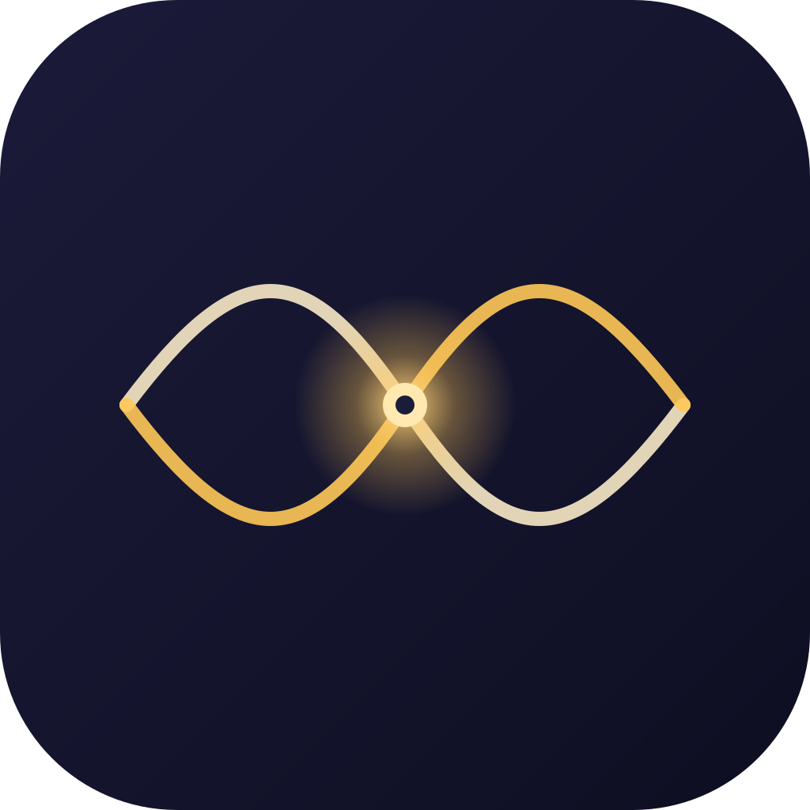

your mind, in tune. A privacy-first brain-computer interface for AI agents. A Muse headband + a Mac app teach your tools — Claude, Cursor, custom MCP clients — when you're focused and when to back off. Raw EEG never leaves your Mac.
Resona stops guessing. It reads your focus state from a Muse headband, locally, and tells your AI agents when to back off. Notifications hush. The Coach speaks slower. The Skeptic stops second-guessing your flow state. Two interlocking waves — brain and agent — meet at a single luminous point: phase lock, not noise on top.
4 EEG channels (TP9/AF7/AF8/TP10) → bandpass + Welch FFT → α/β/θ/δ/γ powers → Focus Coefficient F = β/α. End-to-end under 500 ms. Plotted with Swift Charts in real time.
60 s eyes-open + eyes-closed wizard saves your baseline (mean F, std F). All labels are user-relative — your "deeply focused" is your number, not a population average.
Start / Stop with a label (deep_work / reading / meditate / meeting / custom) + notes. Every frame appended to ~/.nao/sessions/<id>.jsonl. A growing record of your brain across activities.
Ask questions like "where did I lose focus in this two-hour study?" The local LLM answers with citations to real numbers from your actual recording — current FocusFrame, recent trend, per-channel quality auto-injected.
Frontal-γ reward-spike detector with refractory + warmup gates. Surfaces a caution flag when an agent is about to affirm something you're already rewarding — a brake on flattery loops.
Pure-logic FSM (OPEN ↔ QUIET) exposed to cooperating agents via should_interrupt(urgency). Drives macOS Focus on edge transitions through user-installed Shortcuts.
A single MCP server — nao-mcp — exposes the brain. Wire it into Claude Desktop, Cursor, or your own MCP client and your tools start asking before they interrupt.
Tools the agent gets:
get_user_cognitive_load() — single label (deeply_focused · engaged · neutral · resting · uncertain).get_current_brain_state() — full FocusFrame with band powers, per-channel α/β, latency.get_focus_history(seconds) — recent labeled trend.should_interrupt(urgency) — Gatekeeper's verdict before pinging you.get_calibration() — your personal F baseline.:8765); local models optional (Ollama). The Coach can run entirely offline.
brew install ollama).AI tools are too eager. Calendars don't know when you're thinking. Focus modes are crude — on/off, not continuous, not personal. Wearables tell you about your day; they don't change it.
The other lever — coaching the user — has been done to death. Resona coaches the user's agents instead. A brain-computer interface for the rest of your stack.